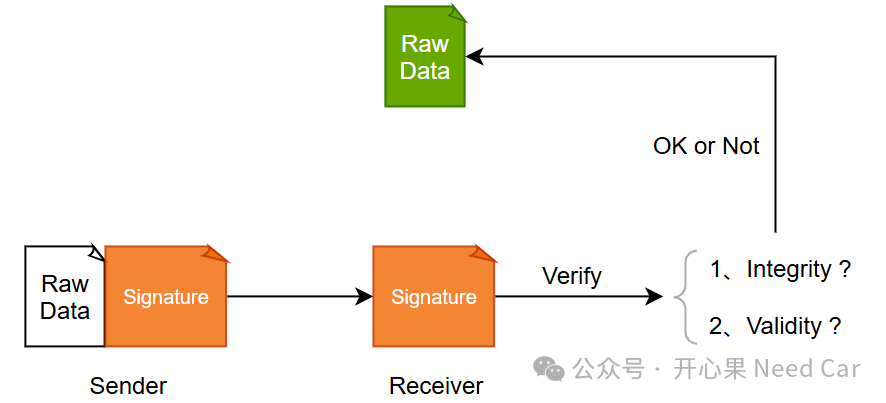
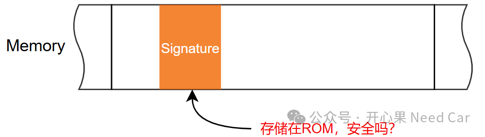
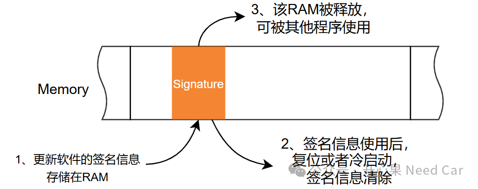
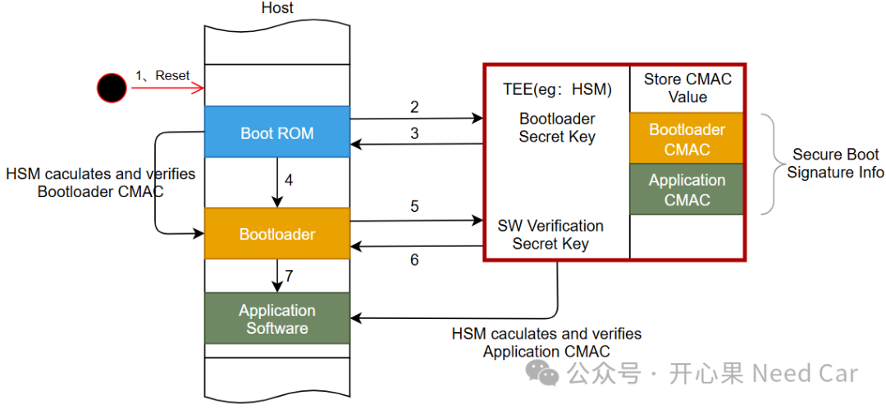

在信息安全的话题里，验签（signature verification）是一个不可规避的话题。在工程项目中，验签主要指两个场景：软件更新验签和安全启动验签。那么，关于这两个场景，验签信息存在在哪个位置更合适呢？本文就这个点展开讨论。对于软件升级，签名一般会使用非对称算法，eg：RSA2048。签名的主要目的是为了确保软件升级过程中，数据的完整性以及数据发送方的身份合法性，示意如下：
在这个过程中就会牵扯一个问题：对于ECU，收到的签名信息应该放在何处呢？具体说：收到的信息存储在RAM还是ROM更合适呢？
假设：收到的签名信息存储在ROM中，安全吗？示意如下：

如果签名信息存储在ROM，也就意味着该信息会一直存在（信息掉电不丢失）。如此，也就意味着外界可能获取到该信息。试想：如果外界知道了软件的签名信息，是不是就存在着软件信息被篡改或者伪造的风险呢？有的同学可能好奇：知道了怎么样呢？能破解吗？或许，对于你我没有这样的能力，但是，别低估了黑客（hacker）的能力。从信息安全的角度考虑，软件验签信息，一直处于明文暴漏，本身就不安全。
实际工程中，确实有的项目会将软件升级的签名信息存储在ROM中。
那么，如果觉得存在ROM不合适，放在RAM合适吗?对于软件升级过程中的签名信息，个人倾向存储在RAM区。为什么呢？我们知道RAM的属性，断电或者硬复位，可以将RAM区数据清除。也就是说，RAM区的签名信息完成校验的使命以后，可以通过复位操作（eg：UDS的$11 01服务）将验签信息清除，如此，验签的信息就不会暴漏，而且，占用的RAM区还可以再次被使用，示意如下：

因此，仅使用一次的软件更新签名信息，存储RAM更合适。
既然讨论了软件升级过程中的签名，就不得不提安全启动中的验签。这个验签动作，主要是为了确保执行的进程没有被篡改，是安全可靠的。所以，相对于软件升级过程的签名信息，安全启动的签名信息使用频率高，而且每次软件启动都需要验证。那么，安全启动所用的签名信息存储在RAM区合适吗？答案是显然的，不合适。那么，安全启动的签名信息应该存储在哪里更合适呢？简单说就是存储在可信环境TEE（Trused Execution Environment，可信环境）非易失内存区，示意如下：
为什么要存储在非易失内存区呢？因为程序每次启动需要验签，验签频次高。为什么需要存储在TEE的非易失存储区呢？这是因为TEE的非易失存储区保护性更高，即：Host一般没有权限直接访问TEE内存区。
- 对于只使用一次的软件升级签名信息，可存储RAM区；
- 对于使用频率高的安全启动验签信息，可存储在可信环境的非易失内存区。
点击下方关注，一起聊聊Autosar/嵌入式，如果需要，联系作者进群，给你更专业的解答